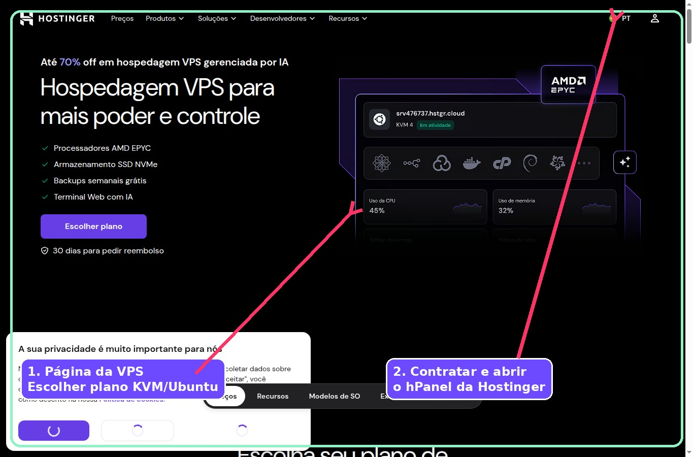
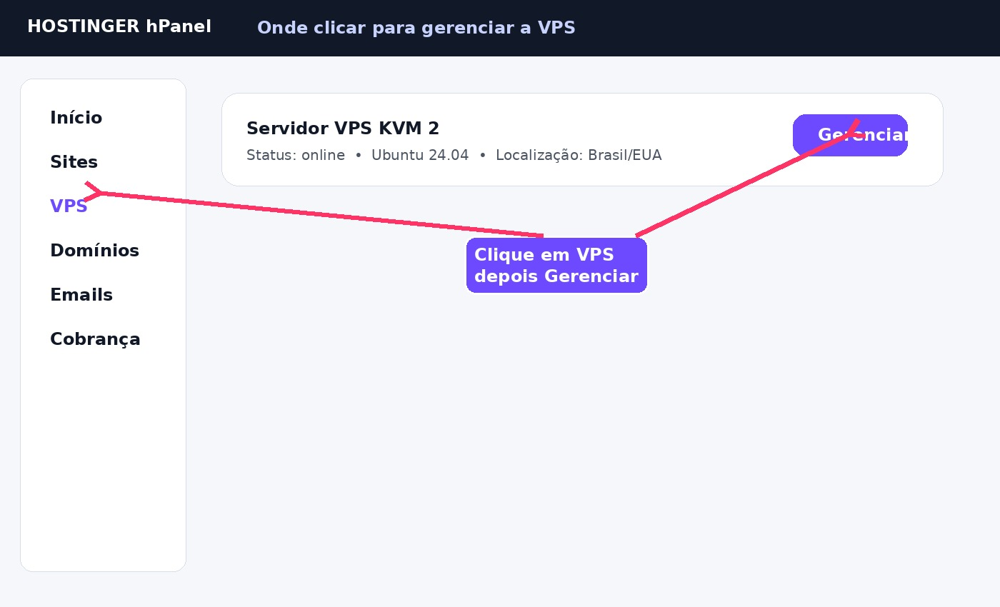
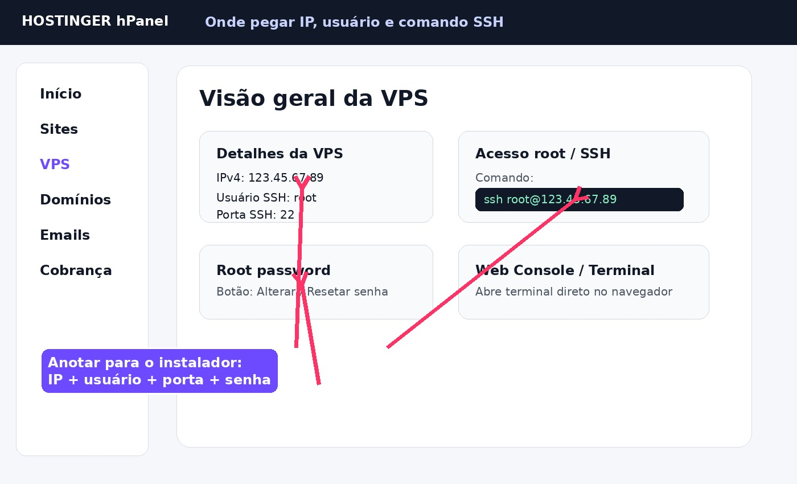
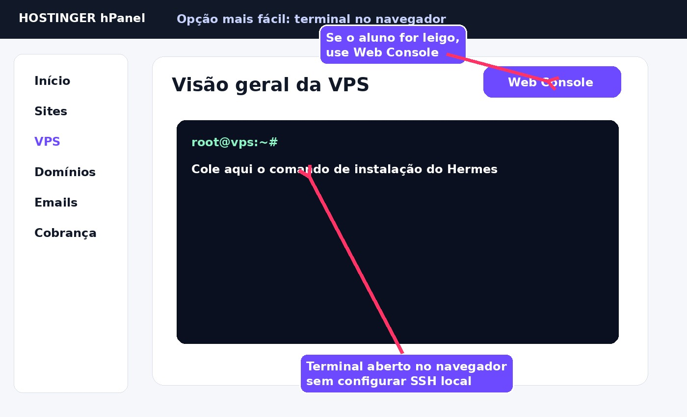
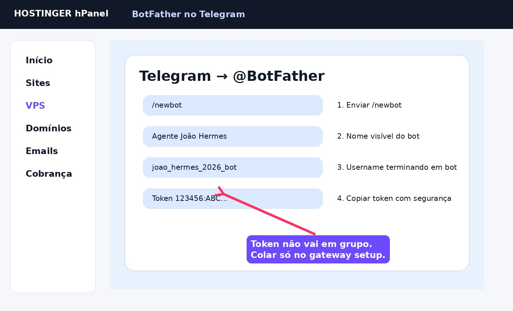

Use esta página na aula. Cada etapa mostra: link que o humano abre, imagem da tela, o que copiar e o que a máquina executa.
Abre o link da Hostinger, escolhe um plano VPS KVM e finaliza a compra.
cliquecontrataçãologin hPanel
Nada ainda. Aqui é só compra/acesso humano.

Nada ainda. Ainda estamos pegando acesso.

root22Esses dados entram no instalador assistido.
Com esses dados, a página monta o comando:
ssh root@IP_DA_VPS

Se o aluno não sabe usar terminal no computador, manda abrir Web Console ou Terminal dentro da Hostinger.
Com o console aberto, o aluno cola o comando de instalação:
curl -fsSL https://hlreboques-oss.github.io/projeto-sites-demos/imersao-hermes-0913/install.sh | bash

Copia o comando abaixo e cola no terminal/Web Console da VPS.
curl -fsSL https://hlreboques-oss.github.io/projeto-sites-demos/imersao-hermes-0913/install.sh | bash
Para usar assinatura ChatGPT/Codex no Hermes, o caminho certo é pelo provider OpenAI Codex, com login OAuth/device code.
não é OpenAI API keyé hermes modelChatGPT or Codex Subscription
Quando o Hermes mostrar um link/código, o aluno abre no navegador, faz login e autoriza.
Rode na VPS:
hermes model
Escolher:
ChatGPT or Codex Subscription / OpenAI Codex
Alternativa avançada, se precisar forçar login pelo navegador:
hermes auth add openai-codex --browser
Correção importante para a aula: OpenAI API Key é outra opção, separada e paga por token. Para assinatura ChatGPT/Codex, o passo certo é OAuth/device code pelo hermes model.
hermes model
Escolher OpenRouter e usar modelo:
nvidia/nemotron-3-ultra-550b-a55b:free
/newbot.bot.Nada ainda. O token será usado no hermes gateway setup.

Esse ID vira o usuário autorizado no Telegram.
hermes gateway setup
Depois testa:
hermes gateway
Se respondeu, deixa permanente:
hermes gateway install hermes gateway start hermes gateway status
Depois que o bot responder no Telegram, o aluno manda:
Leia todos os arquivos da pasta ~/imersao-hermes, começando por ~/imersao-hermes/01_BASE_DO_AGENTE_HERMES.md. Use isso como base operacional deste projeto. Depois me faça 7 perguntas para entender minha oferta, público e meta comercial.